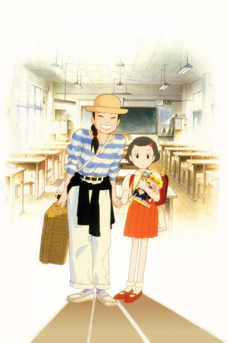
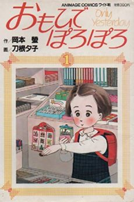

Only Yesterday
おもひでぽろぽろ
The anime takes the story to Film.
7.3AniList score
—Animeter, no votes yet
1film
Anime finished. Where does the manga pick up?
StatusOwn ending
The film adapts childhood episodes from the manga and adds an original adult framing story; read the short manga from the start.